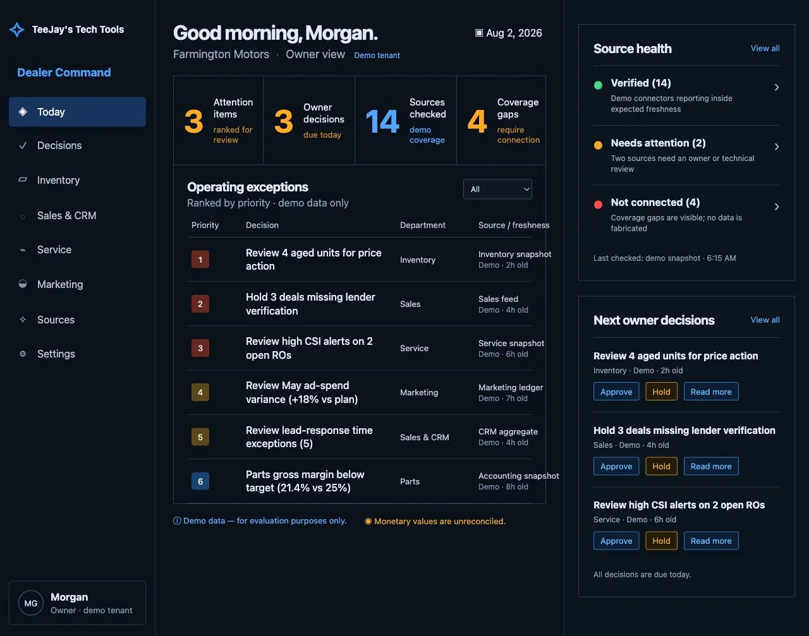

Inventory applications
Feed ingestion, normalization, search, VDPs, merchandising queues, source health, and store routing.
TeeJay's Tech Tools builds custom dealer software around the real operation: inventory feeds, internal dashboards, integrations, reporting, governed AI workflows, and tools that remove repetitive work.

We start with the source, the user, the decision, and the approval boundary, not a generic feature list.
Feed ingestion, normalization, search, VDPs, merchandising queues, source health, and store routing.
Manager-ready exceptions and decisions without pretending every dashboard signal equals profit.
Remove repetitive steps while keeping customer-facing, financial, and production actions behind agreed approvals.
Connect authorized systems, prepare work, record evidence, and make state boundaries visible.
If a template platform forces the dealership around its limitations, we can investigate a more direct application, integration, or replacement path.
Prove the workflow before expanding the system.
Every output keeps a clear evidence and coverage boundary.
Prepare, approve, execute, and verify are separate states.
Scope, hosting, maintenance, and handoff are written down.
Describe the users, systems, repetitive steps, and decision the application needs to improve.
Scope a custom dealer application